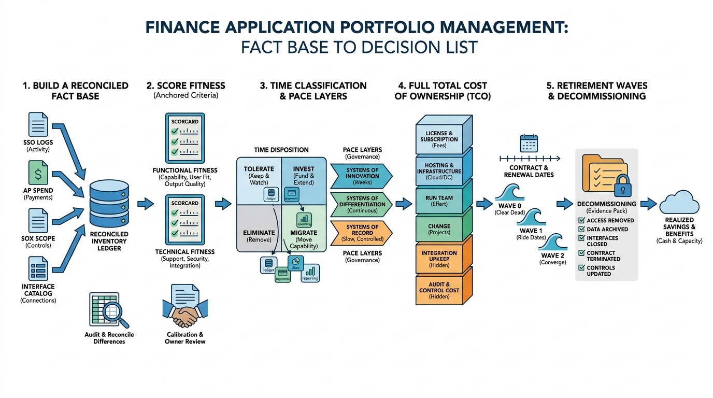

Part I — FOUNDATIONS: The Enterprise and Its Finance Domain
Manage the Application Portfolio as an Investment

Image generated by Google Gemini (gemini-3-pro-image-preview)
Part I — FOUNDATIONS: The Enterprise and Its Finance Domain

Image generated by Google Gemini (gemini-3-pro-image-preview)